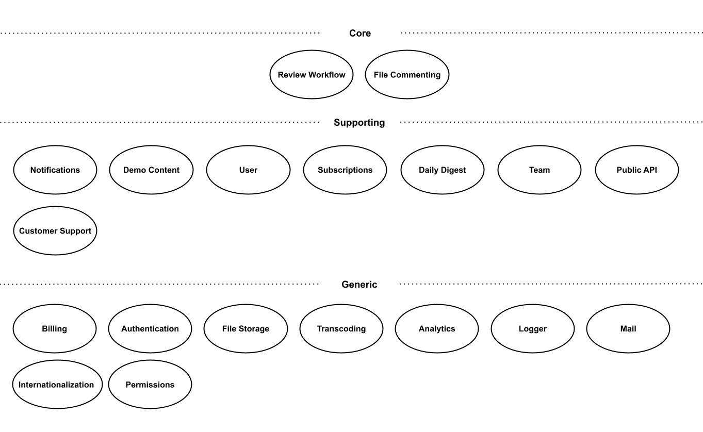
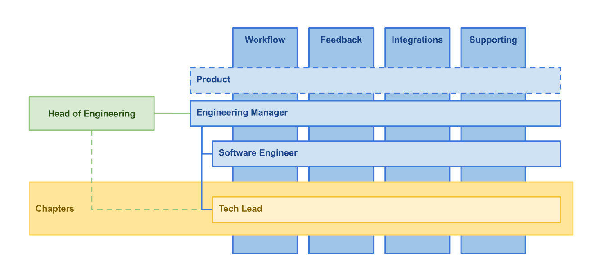
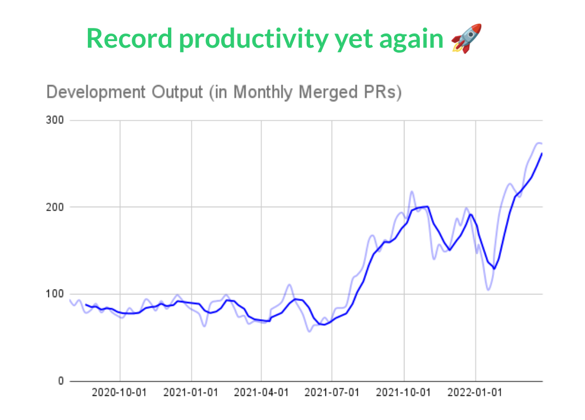
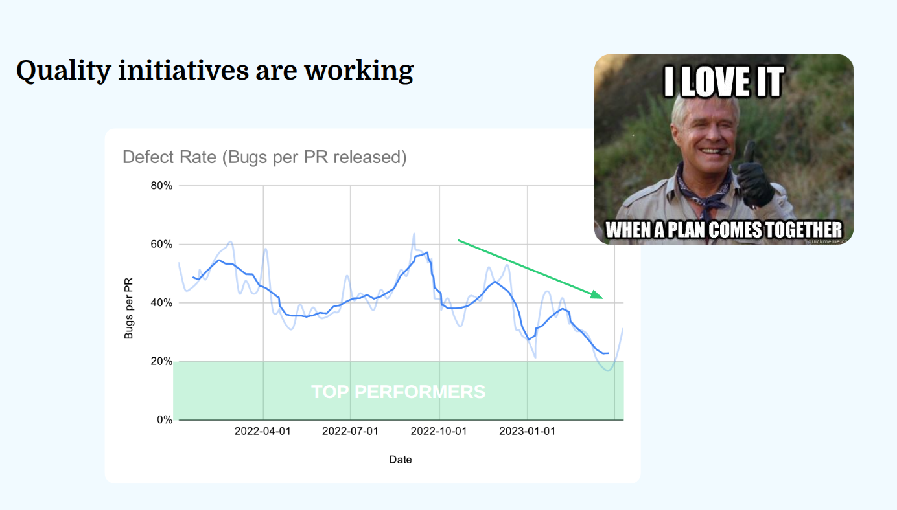
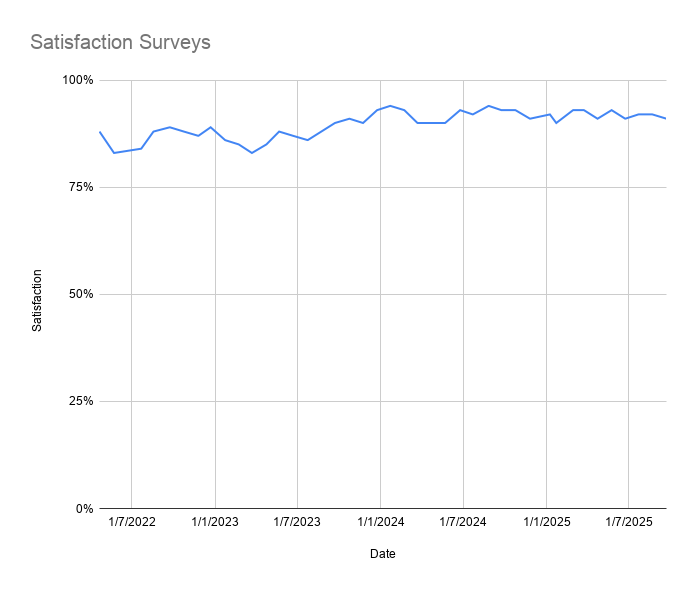

From One Engineering Team to Autonomous Squads
July 21, 2026
In early 2021, Filestage raised a €2.8 million Series A. We started hiring engineers in early summer. Over the following nine months, the development department grew from six engineers to twenty-two people.
At six engineers, one team worked well. We knew which features everyone was changing, where conflicts might appear, and who held the context needed to fix a production issue. This setup relied on everyone keeping most of the product in their head, but this wouldn't scale.
My goal was to apply an approach that had already worked at other companies, mainly Amazon's two-pizza team model: small, autonomous teams with single-threaded ownership of a customer problem. I wanted several teams that could make progress independently, while preserving the speed we had when we were six.
The model that worked for us was simple: define the product domains, assign a squad to each customer outcome, mirror those boundaries in the code, and build enough technical safety for teams to deploy without waiting on me. We scaled ownership, not coordination.
Start with the product, not an org chart
I was a Tech Lead at the time, while our CTO led the department. Before proposing a team structure, I mapped the product using ideas from Domain-Driven Design. I compared several ways of dividing the code: technical layers, frontend and backend, entities, user types, and business domains.
In my experience, technical layers are the default, but they make a poor team boundary. Nearly every customer feature required frontend and backend work, so separate teams would create a handoff for almost every change. Organizing around database entities had a similar problem: one user workflow often crossed several entities, while large entities accumulated unrelated behavior over time.
Product domains gave us a better unit of ownership and autonomy. Our initial map separated the product into:

This was not yet an organization design. It was a way to understand what changed together, what language our customers used, and which knowledge an engineer needed to work safely. Only then did we turn the domains into teams.
Define squads around customer jobs
I brought the domain map and the popular Scaling Agile at Spotify article to the CTO and CPO. The word squad was useful because it described the small, cross-functional, autonomous teams we wanted. We took what made sense and adapted it to our context. Even the original Spotify article describes its model as a snapshot of an evolving company, not a finished framework.
The CPO and I created a document that remains our source of truth today. For every squad it names a primary persona, the job that person is trying to do, a summary of the squad's purpose, a detailed feature list, and the people responsible. Those fields made an abstract structure operational.
We started with three squads:
- Workflow helped project managers create and run a consistent review process. It owned projects, reviewers, files, versions, due dates, and the work needed to move a review forward.
- Feedback helped creators and reviewers exchange clear, actionable feedback. It owned file viewers, comments, annotations, review decisions, comparisons, and reports.
- Supporting owned the capabilities every SaaS product needs but which were not our competitive advantage: accounts, teams, permissions, authentication, billing, notifications, security, and file processing.
Integrations began with only one engineer. Later, it became more strategically important, so we hired two more engineers and grew it into a fourth squad.
The feature list kept ownership crystal clear. Customer Support could select the affected feature from a dropdown, and tickets were automatically routed to the correct squad. Other departments could look up the PM or Engineering Manager instead of asking around in Slack.
Draw boundaries with clear contracts
Workflow, Feedback, and Integrations boundaries were clear because much of their work lived on different product pages. Supporting was harder. It risked becoming the squad responsible for everything that did not fit elsewhere.
We resolved that ambiguity by separating the reusable mechanism from the product behavior:
- Supporting provided the email delivery mechanism and notification settings. The squad that needed an email owned its content and the event that triggered it.
- Supporting built the permission system. Every other squad was still responsible for enforcing the correct permissions in its API routes.
- Supporting provided reusable transcoding for thumbnails, avatars, and web-compatible videos. Workflow owned requesting the correct outputs when a customer uploaded a file.
- Supporting built the in-app notification schema, list, and alerting mechanism. A squad adding a feature also added its notification to that system.
Supporting owned the reusable capabilities, but the core product squads owned the customer outcomes. This preserved the core squads' autonomy.
We also never prohibited one squad from changing another squad's code. Hard barriers would have replaced coordination with waiting. Engineers could make the change themselves, but the relevant code owners reviewed it. That kept work moving without letting domain decisions drift.
Make the code match the organization
We gradually moved feature code until the directory structure reflected the squad structure, updating imports as we went. Then we added code owners for each area. When someone opened a pull request, the people with the right domain context were automatically asked to review it.
We kept the application as a monolith. We had experimented with microservices before and had already felt the operational and development complexity they introduced. Twenty-two people did not justify turning every team boundary into a network boundary. A well-structured monolith with explicit ownership gave us most of the organizational benefit without distributed-system overhead.
Squad autonomy did not mean four ways of solving the same technical problem. We wanted one frontend framework, consistent data-loading and caching patterns, and clear backend helpers for common operations such as database access. Representatives met around the pillars of operational excellence, reliability, performance, security, and cost, following the AWS Well-Architected Framework.
We created technical chapters across the squad structure for backend, frontend, and infrastructure. Engineers who were more interested in technical topics had the opportunity to become Tech Leads. They defined shared best practices and kept each technical layer moving in one direction, independent of which squad was changing it.

That was our version of aligned autonomy: squads owned decisions and delivery inside their product domains, while the engineering organization maintained a small set of shared technical paths.
Build the safety rails before you scale
In hindsight, this is where I made the biggest mistake. Under pressure to deliver the Series A roadmap, I continued pushing new features while poor reliability kept us firefighting. The original engineers were already interviewing candidates and coaching new hires. Production incidents pulled them back into the code because the new people did not yet know enough to diagnose the system.
Adding people temporarily made the situation harder: more changes entered a fragile system while the few people who could fix it suffered even more context switching. I knew in my gut that some trade-offs were wrong, but I did not push hard enough to fix the foundation first.
If I repeated the transition, I would prioritize these investments:
- Automate deployments. We moved from a manual process that released roughly twice a week to deploying every merged pull request. Every squad could then ship without competing for a release window.
- Protect critical behavior with E2E tests. More people touching a legacy codebase means more ways to break behavior they do not know exists. We hired a QA Engineer to expand coverage of the most important customer paths.
- Assign code owners. Autonomy still needs a clear review path when a change crosses a domain boundary.
We also hired a DevOps Engineer to define our infrastructure as code and improve the delivery system. This was a key enabler for automated deployments. Infrastructure could no longer live inside my head and an AWS account; clear definitions made deployment changes repeatable and helped us create test environments for different teams. QA and DevOps were specialists serving the wider department, while the squads consisted mainly of full-stack engineers. Our JavaScript stack made it practical for engineers to own a feature end to end and move temporarily between squads when an initiative needed help.
Grow leaders before filling teams
We promoted three engineers into Engineering Manager roles at the start. I chose them mainly for proactiveness and attitude. They were already eager to take responsibility beyond their assigned tickets, and they knew the codebase, the people, and the product direction. Their existing context made them well prepared to onboard new engineers.
At Filestage, Engineering Managers still contribute code and lead technical work by example. Their individual throughput expectations were lower because their main responsibility was helping their engineers succeed, not maximizing their own coding output. Keeping a technical track record helped them earn credibility, but they also had to learn that their job was no longer to personally solve every difficult problem.
I coached them through real situations using ideas from The Making of a Manager, How to Win Friends and Influence People, and Radical Candor. I should have reserved more time for this. The better they became at coaching their teams, the more leverage I had to grow the department. By the end of the transition I had become Head of Engineering, while the CTO also took responsibility for operations.
Roll out the structure gradually
We did not wait until twenty-two people had joined and announce a sudden reorganization. After aligning with the CTO and CPO, we assigned roadmap features to the future squads with the people we already had. During hiring, we matched candidates' interests to the domain where possible. Someone excited about frontend interaction could join Feedback and work on media viewers and annotations. Someone drawn to foundational systems could work on permissions, authentication, or file processing in Supporting.
Each squad had an Engineering Manager and engineers. We shared one Product Manager and one Product Designer between two squads. I explained the transition in an all-hands meeting and spoke directly with the departments most affected. Customer Support needed fast answers, so leaving ownership ambiguous for them would have defeated the point.
The transition took about nine months, mostly because hiring was slow. It was an unusually competitive market, and even hiring remotely around the world required enormous effort. The best technical signal we found was a take-home exercise that resembled the candidate's day-to-day work. We also discussed values and ways of working early, because hiring so many people quickly could easily change the culture by accident.
Coordinate the exceptions, not every task
The squads were autonomous, not isolated. I met weekly with the Engineering Managers to review the roadmap and identify work that might cross boundaries. I held skip-level conversations with engineers to hear what slowed them down. Squads ran their own retrospectives, the whole development team held a monthly retrospective, and I met with the CPO to resolve friction between Engineering and Product.
We started with very little process: Product created one feature concept document, Engineering extended it with a technical concept, colleagues reviewed it, and we shipped. Our feature process became more detailed over the years, but each addition came from friction observed in a retrospective. We did not begin by copying a large checklist into every squad.
Boundaries were stable, but not sacred. We eventually moved SSO from Integrations to Supporting because it fit better with authentication and account administration. Much later, AI Review Agents justified deliberate work across multiple squads so we could move faster. The map served the product; the product did not serve the map.
Measure whether the system is working
I knew the transition was working when three things improved together: total throughput went up, customer-reported defects went down, and team satisfaction stayed high. None of these metrics proves that squads alone caused the result. During the same period we hired people, automated deployments, expanded tests, and improved infrastructure. That is the point: the organization and its technical system had to scale together.

Each merged PR represented a production release. The increase showed that growing the team increased finished work instead of collapsing delivery under coordination overhead.

Shipping more would not have been a success if customers received more bugs. The later reduction in defect rate gave us confidence that the investments in QA, reliability, and continuous delivery were working. Our satisfaction survey history began after the original transition, so it is not proof of the reorganization, but it showed that the system remained healthy as it matured.

I explain the metrics and their limitations in more detail in Measure what matters.
When should you split one team?
Six people is not a law, but it has become a useful warning threshold for me. Once a manager has more than six direct reports, it becomes harder to give everyone enough attention. Once more than six engineers regularly change the same product, it becomes harder for each person to understand what everyone else is doing.
Consider splitting when several of these symptoms appear:
- The important features and edge cases no longer fit in one head.
- Engineers repeatedly collide in the same areas of the code.
- Other departments do not know who owns a feature or customer issue.
- A manager cannot properly coach all their direct reports.
- Teams cannot ship without waiting for another team or release window.
If those problems do not exist, keep one team. Squads introduce management and product coordination costs of their own. Creating names and boxes before you have distinct areas of ownership is organization theater.
A practical playbook
- Map the product's jobs to be done and the domains that change together.
- Give every squad a persona, customer outcome, summary, and explicit feature list.
- Define contracts for shared capabilities so an enabling team does not become responsible for every feature using them.
- Promote proactive internal leaders early and coach them before their squads fill up.
- Automate deployments, protect critical behavior with E2E tests, and assign code owners.
- Gradually mirror product ownership in the codebase. Do not assume team boundaries require microservices.
- Communicate the map to the whole company and design support-routing and planning workflows around it.
- Use a small coordination cadence and add process only when real friction gives you a reason.
- Track delivery, quality, and satisfaction together. Optimizing only one will hide the damage done to the others.
Clarity creates autonomy
By the end of those nine months, I was leading a twenty-two-person development department that could build several substantial features in parallel. Cross-squad work still happened, but it was the exception. Most of the time, engineers held a smaller and deeper context, knew why their code would change, and knew exactly whom to ask when they crossed a boundary.

Autonomy is not the absence of alignment. It is what becomes possible when ownership is clear and the foundations are safe enough for people to act on it.